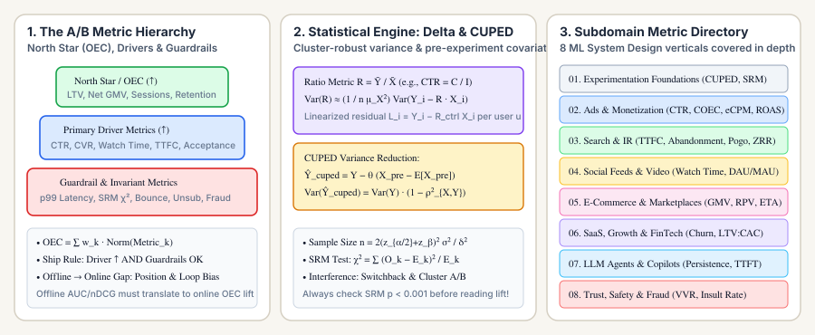

Online A/B Test & ML System Design Metrics: Master Reading Guide
In production ML and ML System Design interviews, improving an offline metric like $\text{ROC-AUC}$ or $\text{nDCG}@10$ by $+1.5\%$ is only half the story. The decisive question is: what online A/B test metrics do you track in production, how are their variances computed when events are clustered by user, and which guardrail metrics prevent your model from cannibalizing long-term ecosystem health? This series organizes every online metric by ML System Design subdomain—with dedicated subfolders and individual deep-dive posts for each metric.

Explore by ML System Design Subdomain
Master the statistical engine behind every online A/B test: designing an Overall Evaluation Criterion (OEC) & guardrail hierarchy, computing Minimum Detectable Effect (MDE) & sample sizes, applying the Delta Method to user-clustered ratio metrics, cutting variance by $1-\rho^2$ with CUPED/CUPAC, and diagnosing Sample Ratio Mismatch ($\chi^2$ SRM), novelty/primacy effects, and two-sided network interference.
- OEC, North Star Decomposition & Guardrail Metrics ($p_{99}$ Latency, Crash & Cannibalization)
- Hypothesis Testing, Statistical Power ($1-\beta$), MDE & Sample Size Formulas
- Ratio Metrics, Intra-User Clustering & the Delta Method Linearization
- CUPED & CUPAC: Pre-Experiment Covariate Variance Reduction ($1 - \rho^2$)
- Sample Ratio Mismatch (SRM), Novelty/Primacy & Network Interference (Switchback & Cluster A/B)
Every metric tracked in sponsored search, display, and feed ad ranking systems: raw Click-Through Rate ($\text{CTR}$) vs. Position-Normalized $\text{COEC}$, Post-Click & View-Through Conversion Rate ($\text{CVR}$) under delayed feedback, auction revenue ($\text{eCPM}$, $\text{CPC}$, $\text{RPM}$, Generalized Second-Price GSP/VCG), advertiser return ($\text{ROAS}$, $\text{iROAS}$ incrementality via Ghost Ads), and calibration ($\text{NE}$ / $\text{COPC}$).
- Click-Through Rate (CTR), Position Bias & Clicks Over Expected Clicks (COEC)
- Conversion Rate (CVR), Multi-Touch Attribution & Delayed Feedback Bias
- eCPM, CPC, RPM & Generalized Second-Price (GSP / VCG) Auction Pricing
- Return on Ad Spend (ROAS), CPA/CAC & Ghost-Ad Incrementality Lift (iROAS)
- Normalized Cross-Entropy (NE), Calibration (COPC) & Ad Load / Hide-Ad Guardrails
How search engines measure real user satisfaction when raw clicks can mislead: Session Success Rate, Time-to-First-Click ($\text{TTFC}$), distinguishing Good Abandonment (instant answers) from Bad Abandonment, Pogo-Sticking (short-dwell back-button bounces), Query Reformulation Rate ($\text{QRR}$), and Zero-Result Rate ($\text{ZRR}$).
Metrics for multi-task feed ranking (YouTube, TikTok, Instagram, Netflix): Dwell Time, Total Watch Time, Video Completion Rate ($\text{VCR}$), $\text{DAU}/\text{MAU}$ Stickiness, $D_1/D_7/D_{28}$ Cohort Retention, multi-head explicit engagement ($P(\text{like}), P(\text{share}), P(\text{comment})$), clickbait suppression, and creator ecosystem side-metrics.
Transaction and physical-world marketplace metrics: Gross Merchandise Value ($\text{GMV}$), Revenue Per Visitor ($\text{RPV}$), Average Order Value ($\text{AOV}$), Net Take Rate, Add-to-Cart ($\text{ATC}$) & Cart Abandonment funnels, Return-Adjusted GMV, Marketplace Liquidity, Search-to-Fill Rate, and ETA / Surge-Pricing guardrails.
Long-horizon recurring revenue and user growth metrics: Logo vs. Net Dollar Retention ($\text{NDR}$), Monthly/Annual Churn & Kaplan–Meier survival hazards, Customer Lifetime Value ($\text{LTV}$), $\text{LTV}:\text{CAC}$ & Payback Period, Uplift Modeling (Qini / AUUC for promo targeting), and Notification CTR vs. Unsubscribe guardrails.
Online evaluation of deployed generative AI systems: Task Resolution & Support Deflection Rate, implicit user feedback signals (Thumbs Up/Down, Copy Rate, Regeneration & Prompt Reformulation Rate), Code Copilot Acceptance Rate vs. $30$-Minute Code Persistence Rate, and serving efficiency guardrails ($\text{TTFT}$, $\text{TPOT}$, Cost-Per-Task, and False-Refusal Rate).
Adversarial online metrics where ground truth is censored by your own model's blocks: Payment Chargeback Rate (in bps), False Decline / Customer Insult Rate, Net Risk-Adjusted Contribution Margin, Violative View Rate ($\text{VVR}$ / Prevalence via random auditing), Proactive Automated Catch Rate, and User Appeal Overturn Rate.
ML System Design Interview Cheat-Sheet: Offline vs. Online Metrics
| ML System Design Domain | Offline ML Metric | Primary Online A/B Driver / OEC | Critical Guardrail Metrics |
|---|---|---|---|
| Ad Click & Conversion Ranking | Normalized Cross-Entropy ($\text{NE}$), Calibration ($\text{COPC}$), $\text{PR-AUC}$ | $\text{eCPM} / \text{RPM}$, Position-Normalized $\text{COEC}$, Incremental $\text{ROAS}$ | Ad Hide/Block Rate, Organic Session Dwell Drop, Advertiser Budget Exhaustion |
| Web & E-Commerce Search | $\text{nDCG}@10$, $\text{MRR}$, $\text{Recall}@100$ | Session Success Rate, $\text{TTFC}\downarrow$, Conversion Rate | Pogo-Sticking Rate, Bad Abandonment, Zero-Result Rate ($\text{ZRR}$), $p_{99}$ Latency |
| Short-Form Video & Social Feed | Multi-task weighted $\text{AUC}$ + Watch-Time $\text{MAE}/\text{Pinball}$ | Daily Watch Time / User, Engaged Sessions, $D_7$ Retention | Skip-$<3\text{s}$ Rate, Report/Not-Interested Rate, Creator Exposure Gini |
| Marketplace & Ride-Sharing | Conversion $\text{Log-Loss}$, ETA Pinball Loss $\rho_\tau$ | Net $\text{GMV}$, Revenue Per Visitor ($\text{RPV}$), Search-to-Fill Liquidity | Cart/Request Cancellation Rate, Return Rate, Driver Idle % (Switchback test) |
| Code Copilot & LLM Assistants | $\text{pass}@k$, RAGAS Faithfulness, Judge LC-WinRate | Task Resolution Rate, Accepted-Code $30\text{-min}$ Persistence | Regeneration Rate, Prompt Reformulation, $\text{TTFT}$ ($p_{95}$), False Refusal Rate |
| Payment Fraud & Trust/Safety | Recall @ Fixed $1\%$ FPR, Cost-Weighted Precision | Net Risk-Adjusted Margin, Violative View Rate ($\text{VVR}\downarrow$) | Good-User False Decline (Insult Rate), Appeal Overturn Rate, Manual Review Queue Lag |